Internet of Things
Sensor, LoRa, Arduino, dan Raspberry Pi untuk akuisisi data jarak jauh.
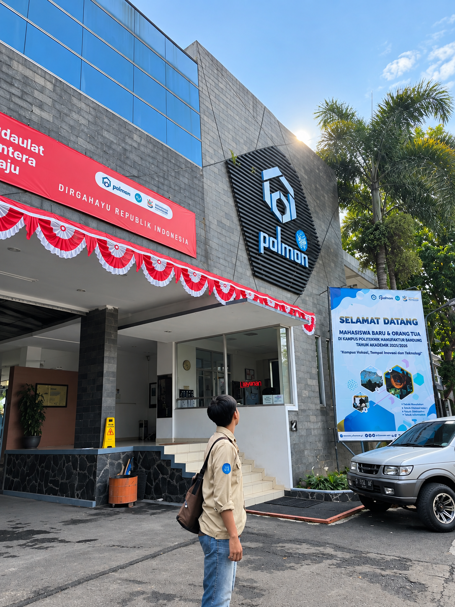
Mulai dari IoT, otomasi PLC, computer vision, sampai jaringan.
Merancang solusi IoT, otomasi, dan computer vision untuk memantau serta mengendalikan proses produksi secara real-time.
IoT & Sensor Networks, Otomasi Industri, Computer Vision, Machine Learning, Jaringan Komputer, Web Development
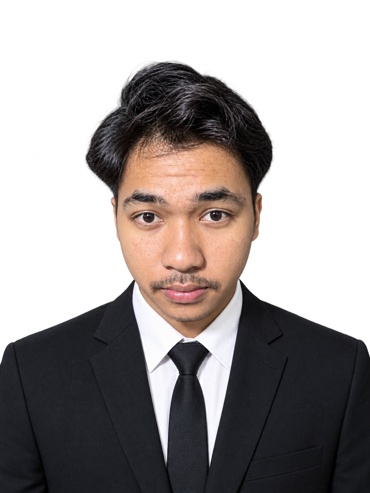
Mahasiswa Politeknik Manufaktur Negeri Bandung, Jurusan Teknik Otomasi Manufaktur dan Mekatronika, Program Studi D4 Teknologi Rekayasa Informatika Industri.
Fokus saya ada di titik temu antara perangkat keras dan perangkat lunak: sensor dan PLC di lapangan, lalu datanya diolah dan ditampilkan lewat dashboard yang mudah dibaca operator. Terbiasa menangani konfigurasi Mikrotik, pengkabelan LAN, pengelolaan server, dan network monitoring.
Untuk sisi data, saya memakai Python dan SQL, termasuk penerapan machine learning dan computer vision untuk inspeksi kualitas dan sistem cerdas lainnya.
Enam bidang yang saya pelajari dan praktikkan langsung lewat proyek kampus, magang industri, dan eksperimen pribadi.
Sensor, LoRa, Arduino, dan Raspberry Pi untuk akuisisi data jarak jauh.
Deteksi dan klasifikasi objek dengan YOLO dan OpenCV untuk inspeksi kualitas.
Pemrograman PLC Omron, kendali motor, dan simulasi proses produksi.
Konfigurasi Mikrotik, pengkabelan LAN, pengelolaan server, dan monitoring.
Pengolahan data dan pemodelan dengan Python untuk mendukung sistem cerdas.
Dashboard dan aplikasi web dengan HTML, CSS, JavaScript, dan Node-RED.
 Python
YOLO
Python
YOLO
 OpenCV
OpenCV
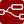
Node-RED SQL Server
Mikrotik
SQL Server
Mikrotik
 PLC Omron
PLC Omron
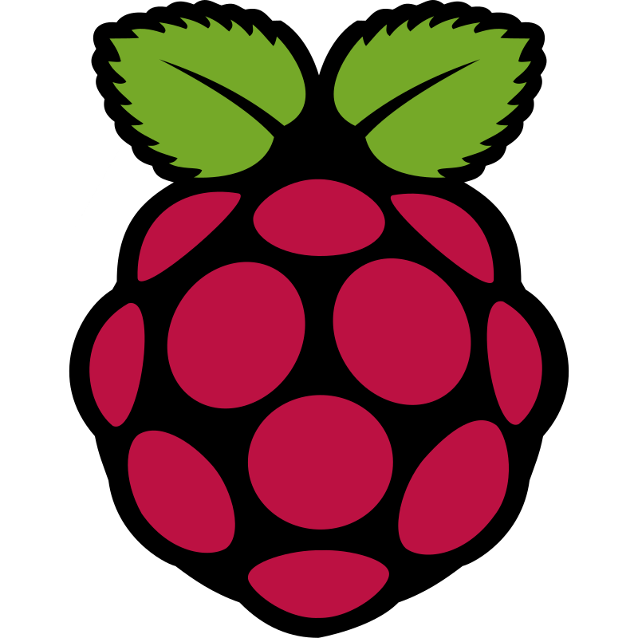
Raspberry Pi Arduino
Arduino
 VsCode
VsCode
 Unity
Unity
Karawang, Indonesia. Terlibat dalam pengembangan sistem, quality inspection, otomasi, pemrograman, serta maintenance mesin dan sistem industri.
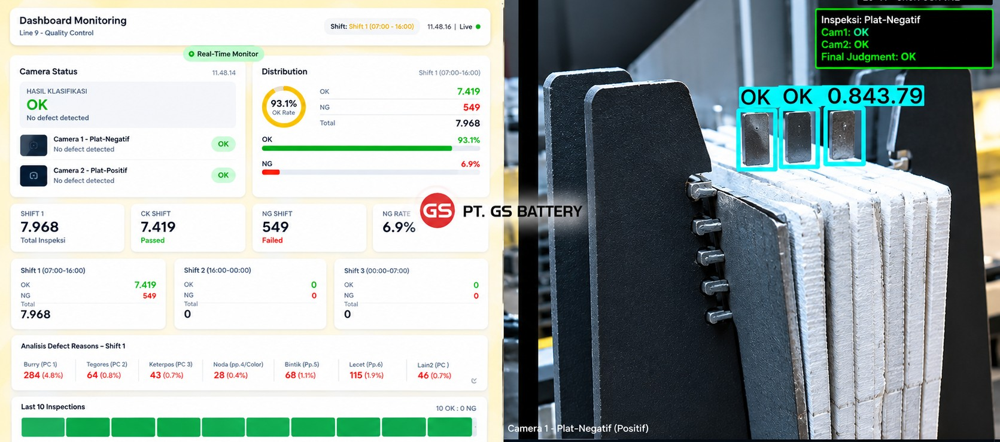
Membangun sistem computer vision berbasis machine learning yang mengklasifikasikan plat menjadi NG (Not Good) atau OK dari hasil inspeksi visual, lalu mencatat hasilnya ke basis data produksi.
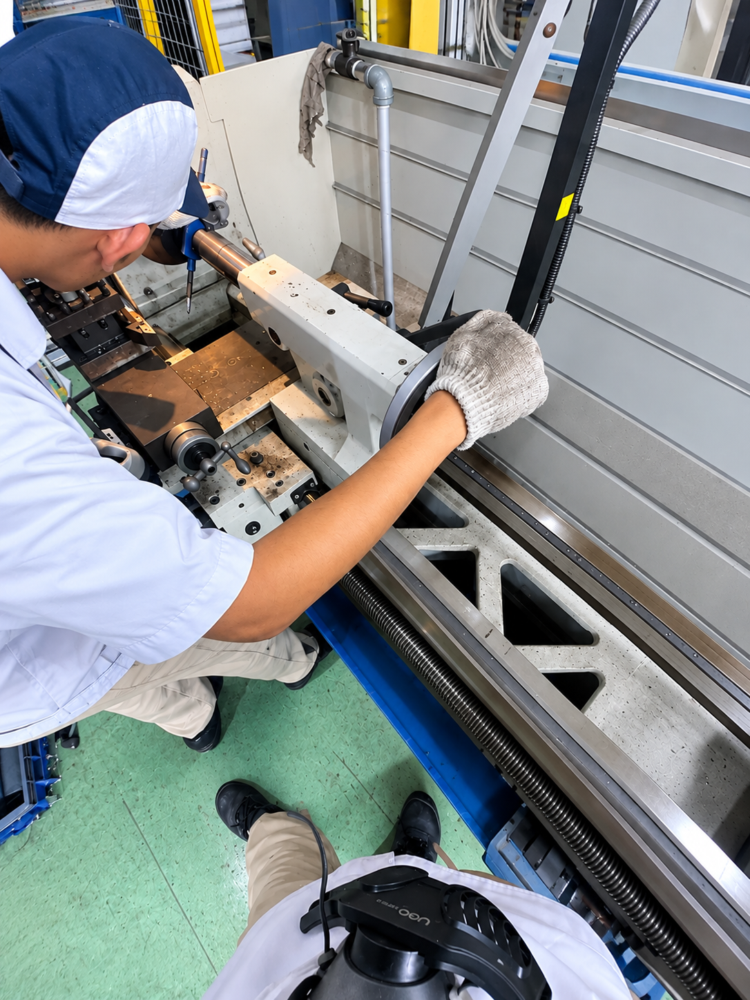
Mendukung pemeriksaan kualitas produk serta perawatan mesin dan sistem industri di lini produksi.
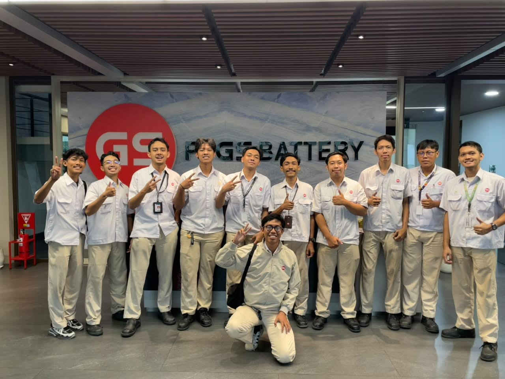
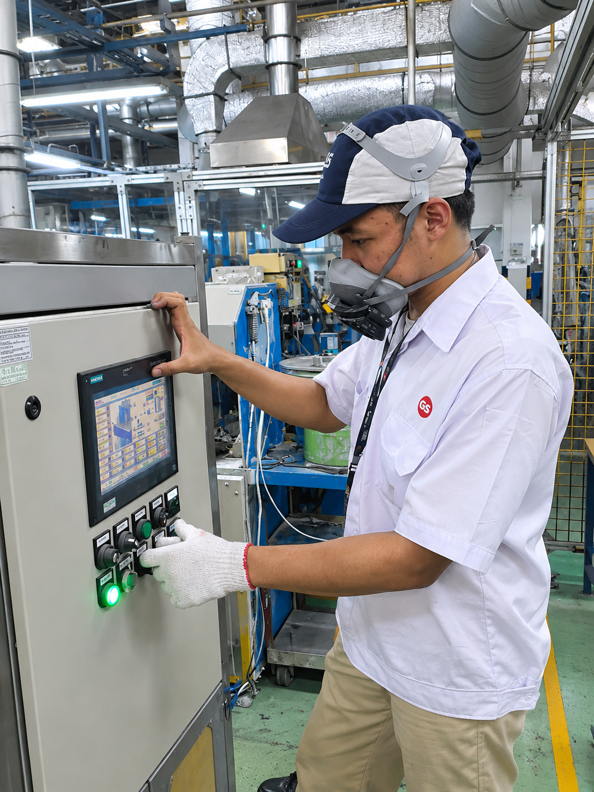
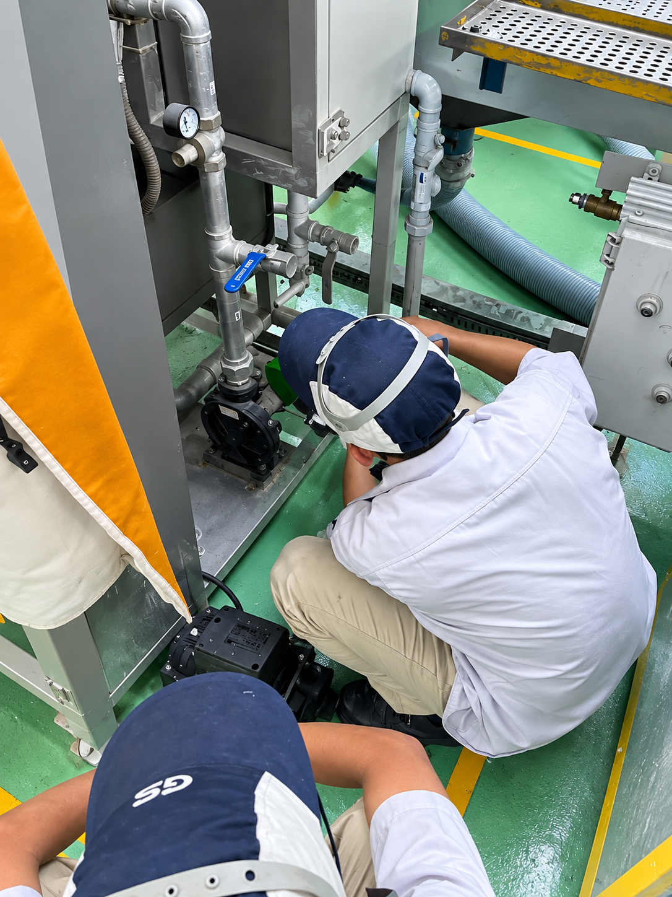
Dua belas proyek dari perkuliahan dan eksplorasi pribadi, mencakup IoT, otomasi, machine learning, sampai jaringan.
Belum ada proyek pada kategori ini.
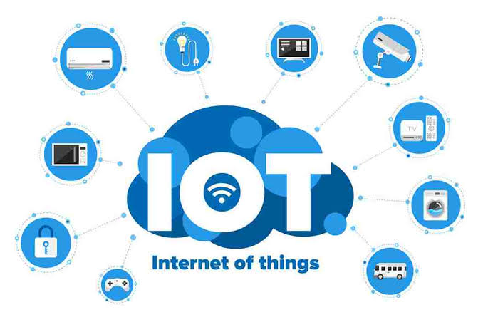
Mengembangkan sistem pemantauan suhu menggunakan sensor LM35 dan modul LoRa untuk transmisi data jarak jauh, serta menampilkan hasil pengukuran melalui dashboard berbasis web.
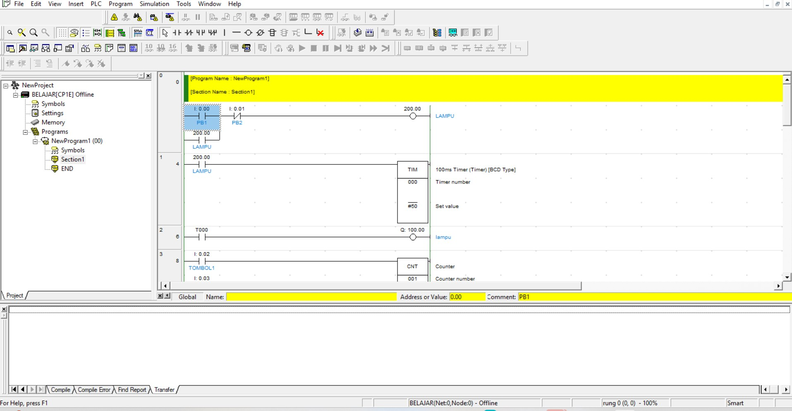
Mendesain dan memprogram sistem kendali motor DC berbasis PLC Trainer Omron untuk simulasi otomasi proses industri sederhana.
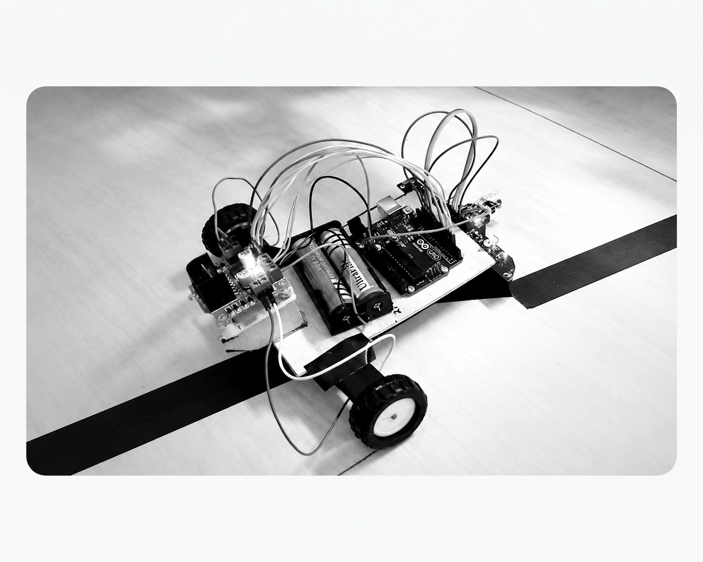
Merancang dan memprogram robot line follower menggunakan sensor inframerah untuk mengikuti jalur secara otomatis dengan mikrokontroler Arduino.

Mengimplementasikan algoritma machine learning untuk mengklasifikasikan buku berdasarkan kategori dan metadata, guna mempermudah proses pencarian.
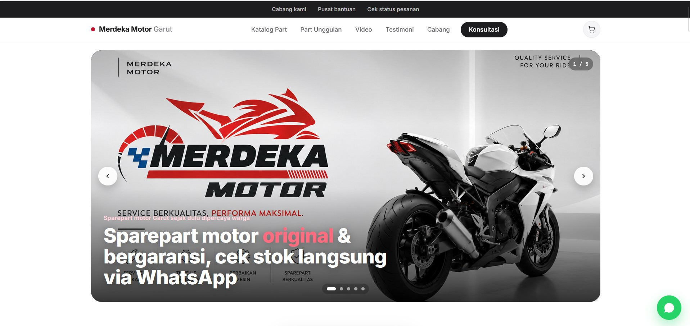
Membangun situs web profil profesional menggunakan HTML, CSS, dan JavaScript untuk menampilkan layanan serta informasi bengkel.
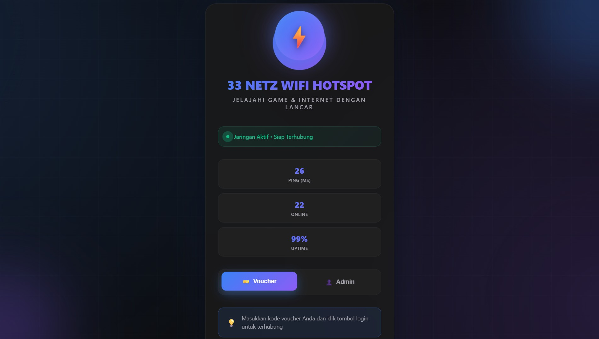
Melakukan konfigurasi Mikrotik Router menggunakan Winbox untuk menyediakan layanan hotspot berbayar di wilayah Antapani, Bandung.
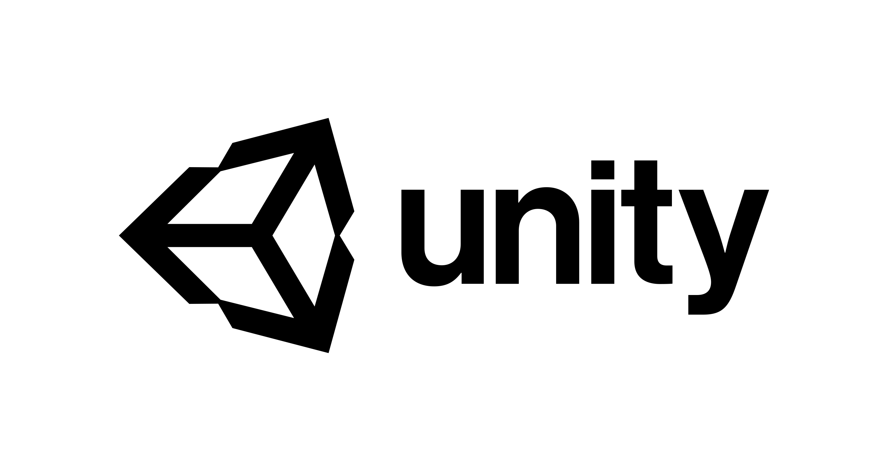
Pengembangan aplikasi edukasi interaktif 3D serta simulasi Smart Factory yang mengintegrasikan Arduino dan Unity untuk monitoring dan kontrol otomatis.

Sistem computer vision yang mendeteksi dan mengklasifikasikan plat menjadi kategori positif (OK) dan negatif (NG) secara otomatis dari citra hasil inspeksi.
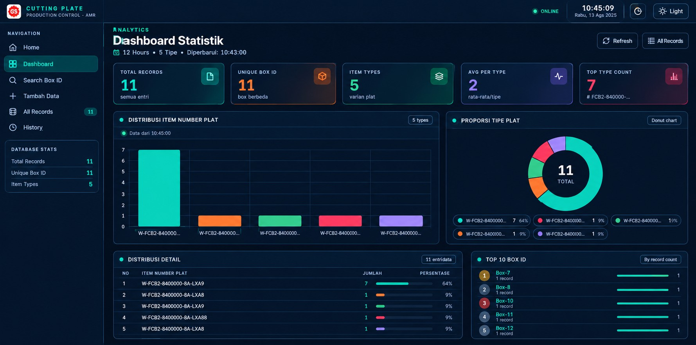
Aplikasi scanner berbasis Python yang membaca barcode untuk mencari dan menampilkan data plat secara cepat dari basis data produksi.
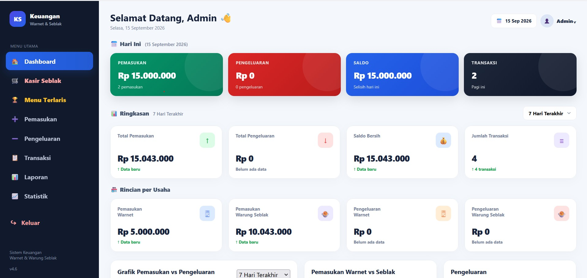
Aplikasi pencatatan pemasukan, pengeluaran, dan laporan keuangan sederhana untuk membantu pelaku UMKM memantau arus kas usahanya.
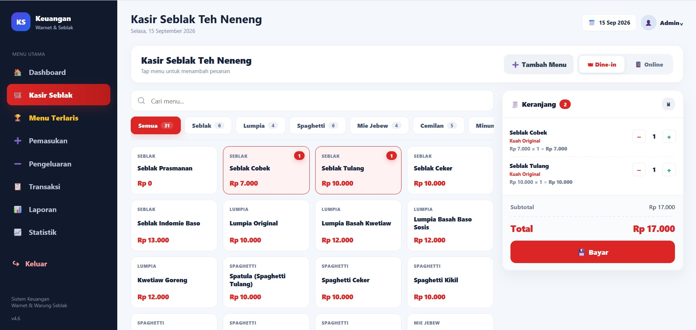
Aplikasi point of sale untuk transaksi penjualan, manajemen stok, dan rekap harian yang memudahkan operasional toko UMKM.
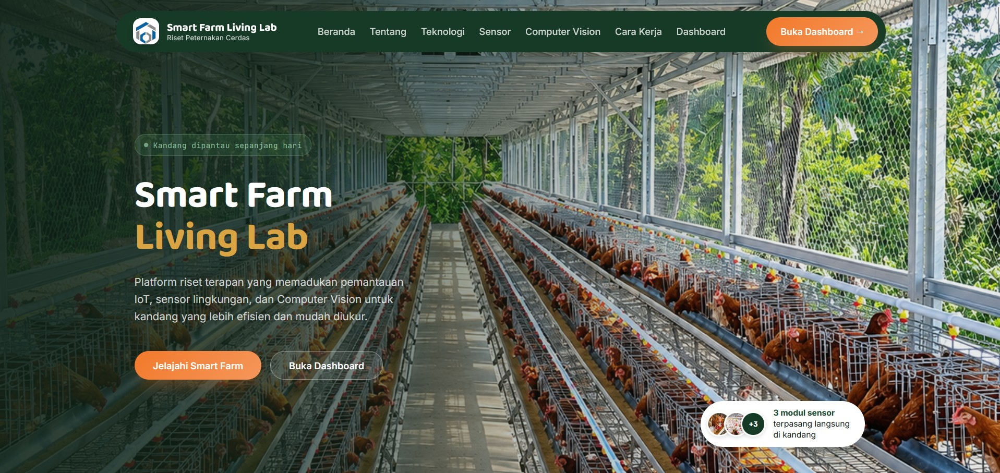
Dashboard peternakan berbasis IoT yang memantau kondisi kandang secara real-time dan memakai computer vision serta machine learning untuk deteksi dini kondisi ternak.
Jurusan Teknik Otomasi Manufaktur dan Mekatronika. Fokus pada otomasi industri, IoT, jaringan komputer, dan pemrograman web.
Tertarik dengan otomasi, IoT, jaringan, atau pengembangan sistem? Kirim pesan dan saya balas secepatnya.